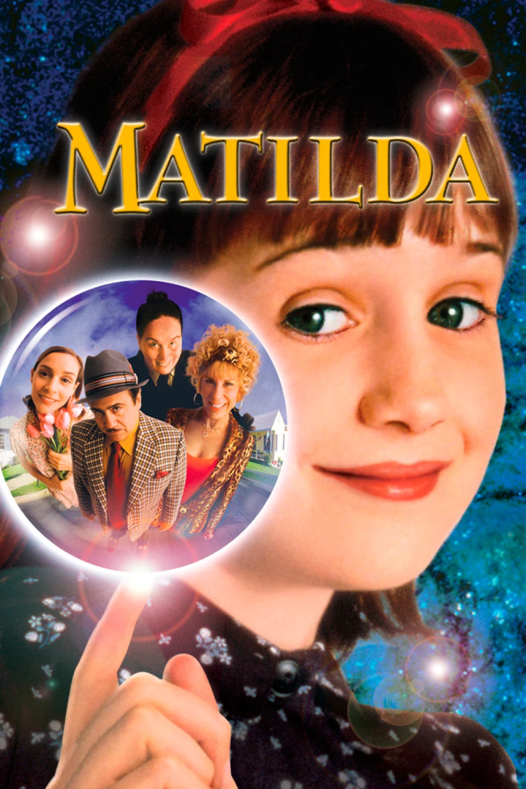
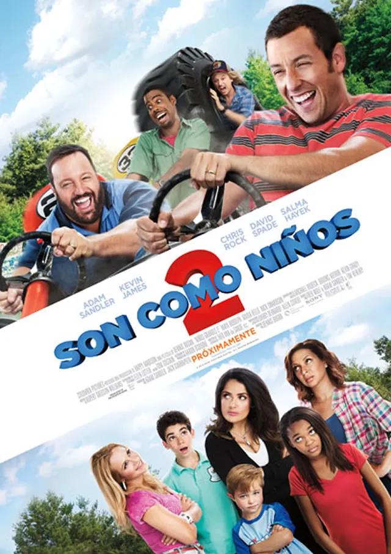
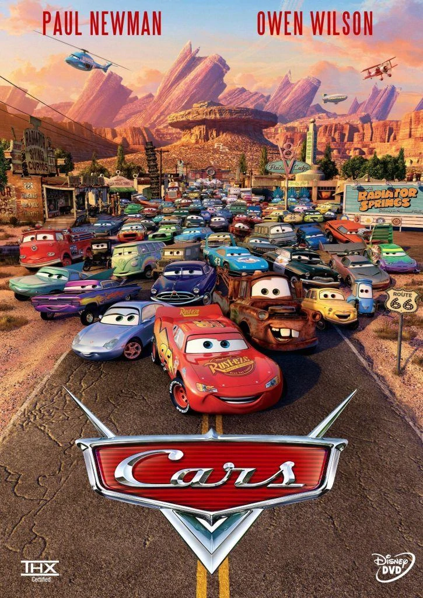
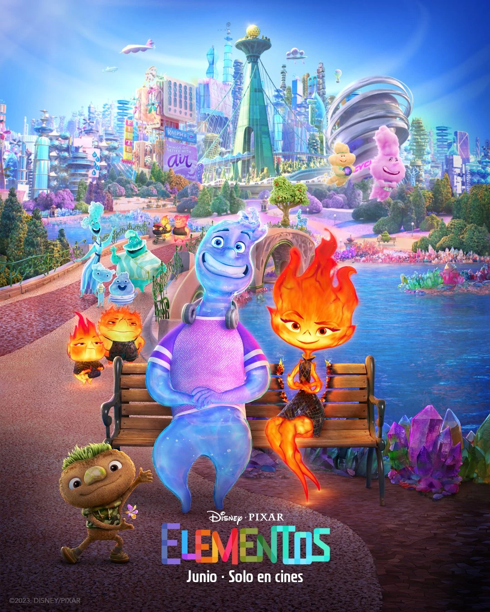
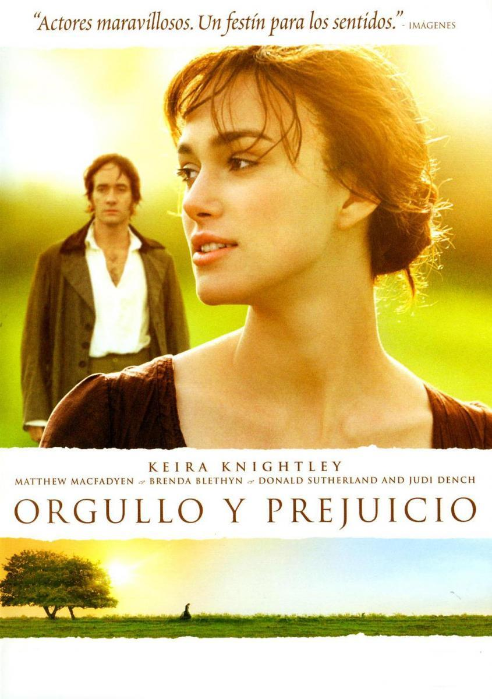
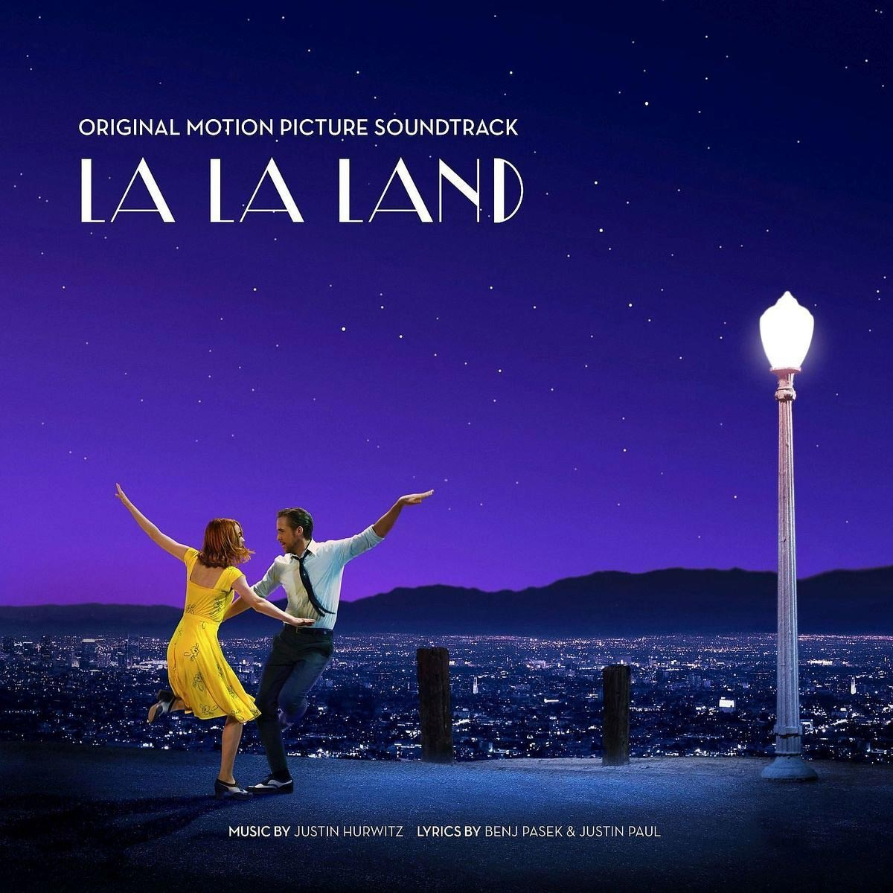
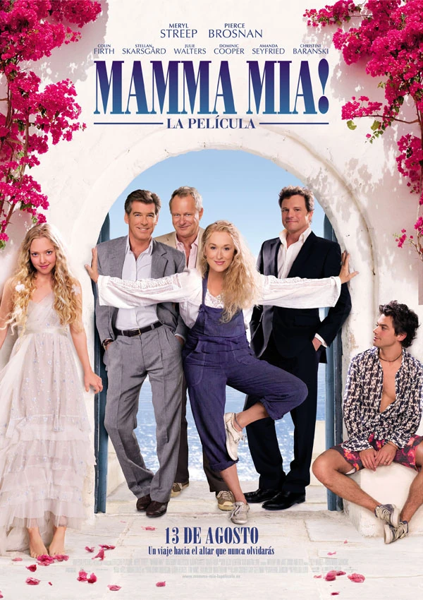

Matilda

- Calificacion: 4.7
- Fecha de estreno: 2 de agosto de 1996
- Duracion: 98 mins
- Genero: Comedia familiar
- Sinopsis: Matilda es una historia sobre una niña inteligente y valiente que enfrenta los desafíos de una vida llena de negligencia y abuso, y cómo utiliza sus habilidades especiales para ayudar a las personas que realmente se preocupan por ella. El final es feliz, ya que Matilda encuentra un ambiente escolar seguro y amoroso en el que puede crecer y desarrollarse.
Son como niños 2

- Calificacion: 4.5
- Fecha de estreno: 19 de Septiembre 2013
- Duracion: 105 mins
- Genero: Comedia
- Sinopsis: Tres años después de la reunión que volvió a unirlo a sus amigos de la infancia, Lenny Feder regresa junto a su familia a su pueblo natal para poder estar más cerca de sus amigos, a los que echa verdaderamente de menos.
Creed
- Calificacion: 4.6
- Fecha de estreno: 4 de Febrero 2016
- Duracion: 133 mins
- Genero: Accion
- Sinopsis: Adonis Johnson no llegó a conocer a su famoso padre, el campeón del mundo de los pesos pesados, Apollo Creed. Sin embargo, la pasión por el boxeo la lleva en la sangre y decide poner rumbo a Filadelfia. Una vez en la ciudad, Adonis busca a Rocky y le pide que sea su entrenador. Con Rocky a su lado, ¿será capaz de desarrollar no solo la fuerza sino también el corazón de un verdadero boxeador para subirse al cuadrilátero?
Rey Leon
- Calificacion: 4.8
- Fecha de estreno: 7 de Julio 1994
- Duracion: 88 mins
- Genero: Familiar/aventura/drama
- Sinopsis: "El Rey León" es una película animada que sigue la historia de Simba, un joven león que debe enfrentar desafíos y responsabilidades para reclamar su lugar como rey de la Sabana después de la tragedia que afecta a su familia. Acompañado de amigos leales, Simba aprende valiosas lecciones sobre el liderazgo y el amor mientras lucha por restaurar el equilibrio en su hogar.
Cars

- Calificacion: 4.8
- Fecha de estreno: 9 de Julio 2006
- Duracion: 117 mins
- Genero: Comedia/infantil
- Sinopsis: El aspirante a campeón de carreras Rayo McQueen parece que está a punto de conseguir el éxito. Su actitud arrogante se desvanece cuando llega a una pequeña comunidad olvidada que le enseña las cosas importantes de la vida que había olvidado.
Barbie
- Calificacion: 2.6
- Fecha de estreno: 20 de Julio 2023
- Duracion: 114 mins
- Genero: Comedia/drama
- Sinopsis: Después de ser expulsada de Barbieland por no ser una muñeca de aspecto perfecto, Barbie parte hacia el mundo humano para encontrar la verdadera felicidad.
Elementos

- Calificacion: 4.3
- Fecha de estreno: 15 de Junio 2023
- Duracion: 101 mins
- Genero: Animacion familiar
- Sinopsis: Elementos es una película original de Disney y Pixar ambientada en Ciudad Elemento, donde conviven los residentes de Fuego, Agua, Tierra y Aire. La historia presenta a Candela, una joven dura, avispada y pasional, cuya amistad con un chico divertido, sensible y que se deja llevar, Nilo, desafía sus creencias sobre el mundo en el que viven. La película también cuenta la historia de Ember Lumen, un elemento de fuego, y Wade Ripple, un elemento de agua, que viven en una ciudad donde los elementos viven en armonía.
Orgullo y prejuicio

- Calificacion: 4.8
- Fecha de estreno: 23 de Noviembre 2005
- Duracion: 127 mins
- Genero: Novela/romance
- Sinopsis: En esta daptación de la célebre novela de Jane Austen, la joven Lizzie conoce al apuesto y elegante señor Darcy, pero, a primera vista, le parece demasiado orgulloso y arrogante.
LA LA Land

- Calificacion: 4.7
- Fecha de estreno: 26 de Enero 2017
- Duracion: 128 mins
- Genero: Musical/romance
- Sinopsis: Mia y Sebastian son dos jóvenes que quieren abrirse camino en el mundo de Hollywood. Mia es una joven aspirante a actriz que trabaja como camarera mientras acude a castings y Sebastian toca el piano en bares. Un día sus caminos se cruzan e inmediatamente se enamoran. Los dos trabajan juntos para hacer realidad sus sueños, pero pronto se dan cuenta de que el mundo del arte pide sacrificios que ponen en peligro su relación.
Mamma Mia

- Calificacion: 4.8
- Fecha de estreno: 21 de Agosto 2008
- Duracion: 108 mins
- Genero: Musical/romance/comedia
- Sinopsis: Versión cinematográfica del popular musical de ABBA. Una joven (Amanda Seyfried) que ha crecido en una pequeña isla griega, ha sido educada por una madre rebelde y poco convencional (Streep), que siempre se ha negado a revelarle la identidad de su padre. Cuando, por fin, parece que la joven está a punto de saberlo, aparecen tres posibles candidatos (Brosnan, Firth y Skarsgard).